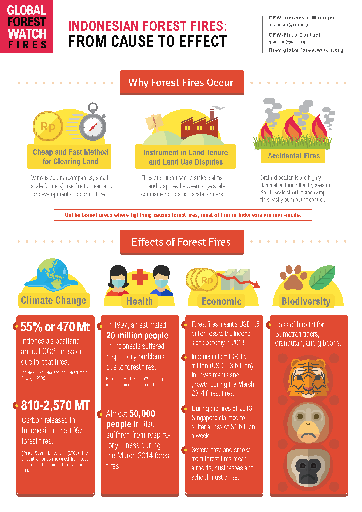
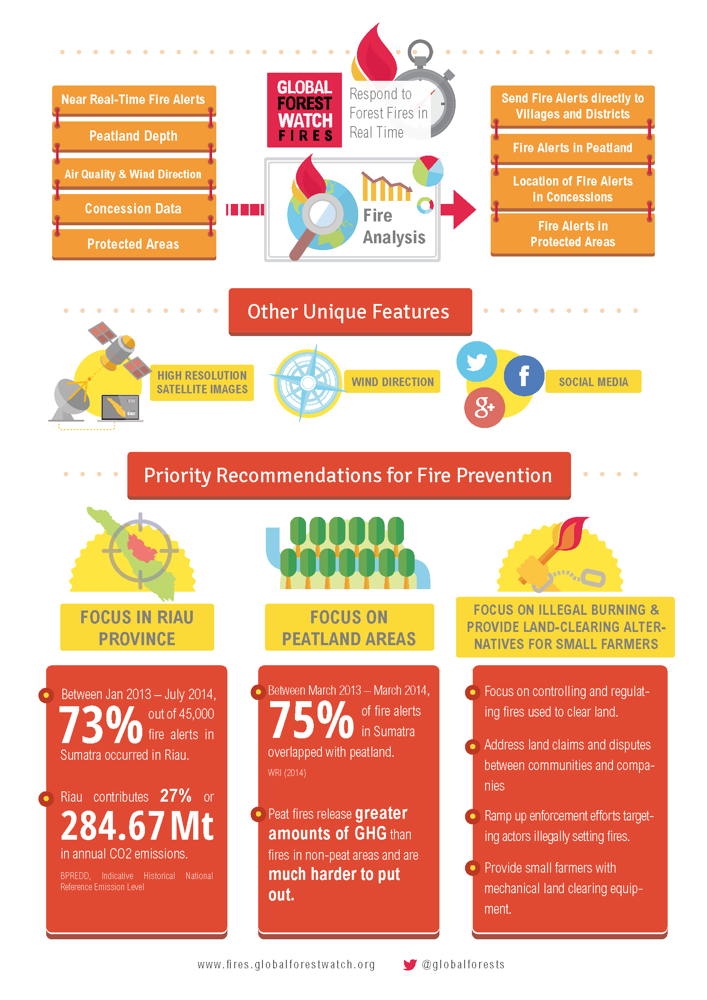

About GFW Fires
Global Forest Watch Fires (GFW Fires) is an online platform for monitoring and responding to forest and land fires in the ASEAN region using near real-time information. GFW Fires can empower people to better combat harmful fires before they burn out of control and hold accountable those who may have burned forests illegally.
GFW Fires combines real-time satellite data from NASA’s Active Fires system, high resolution satellite imagery, detailed maps of land cover and concessions for key commodities such as palm oil and wood pulp, weather conditions and air quality data to track fire activity and related impacts in the South East Asia region. GFW Fires also offers on-the-fly analysis to show where fires occur, and help understand who might be responsible.
By working with national and local governments, NGOs, corporations, and individuals, GFW Fires is working to quicken fire response time, ramp up enforcement against illegal fires, help ensure those who are illegally burning are held accountable, and coordinate relationships between government agencies.
GFW Fires builds on the groundbreaking platform, Global Forest Watch, but with a specific focus on mitigating harmful fire activity in the ASEAN region. GFW Fires is free to use and follows an open data approach in putting decision-relevant information in the hands of all who want to minimize the impacts of fires on forests and human health and livelihoods.
GFW Fires is supported by a diverse partnership of organizations that contribute data, technical capabilities, funding, and expertise. The partnership is convened by the World Resources Institute. See a full list of partners below.
Forest fires and their impact
Fires are a long-standing problem. The causes of these fires are complex, and are often attributed to companies clearing land for oil palm or other plantations, small farmers clearing land for cultivation, or communities using fire to clear forest, often in areas of conflict with large companies.
In low-lying primary forests such as those in Indonesia, the peat soils can make fires much worse. Peat fires are much harder to put out and release far greater amounts of smoke and greenhouse gases into the atmosphere than fires in non-peat areas and are associated with an increased risk of respiratory illness and heart attacks. This noxious haze can cross oceans and borders, carrying serious pollution and health concerns across the region causing international tensions.
Help combat forest fires by participating with the GFW Fires system, signing up to receive Fire Alerts in Indonesia, or sharing your story on our blog.
INDONESIAN FOREST FIRES: FROM CAUSE TO EFFECTThe GFW Partnership
Founding Partners
Partners & Collaborators
- Baker & McKenzie
- Food and Agriculture Organization of the United Nations
- International Union for Conservation of Nature
- Planet Labs
- SarVision
- Yayasan Puter Indonesia
Funders
Current Funders
Past Funders
- Bobolink Foundation
- International Finance Corporation
- Johnson & Johnson (funded GFW Commodities)
- Ministry of Foreign Affairs of the Netherlands
- NewPage (funded GFW Commodities)
- Rainforest Alliance
- Swedish International Development Cooperation Agency
- The Tilia Fund
- United Nations Environment Programme
- Walmart Foundation (funded GFW Commodities)
Data Providers
- Alliance for Zero Extinction
- BirdLife International
- CGIAR
- Conservation International
- Digital Globe
- Food and Agriculture Organization of the United Nations
- Global Witness
- Greenpeace
- Imazon
- International Center for Tropical Agriculture (CIAT)
- International Union for Conservation of Nature (IUCN)
- Mongabay
- NASA Ames Research Center
- NASA Fire Information for Resource Management System
- NASA Jet Propulsion Laboratory
- Organismo de Supervisión de los Recursos Forestales y de Fauna Silvestre (OSINFOR)
- SarVision
- Tierra Minada
- Transparent World
- UNEP World Conservation Monitoring Centre
- University of Maryland
- U.S. Geological Survey
- Winrock International
- Woods Hole Research Center
- World Resources Institute
- Yayasan Puter Indonesia
Website Designed by
We welcome others to join the growing GFW partnership.
Email us